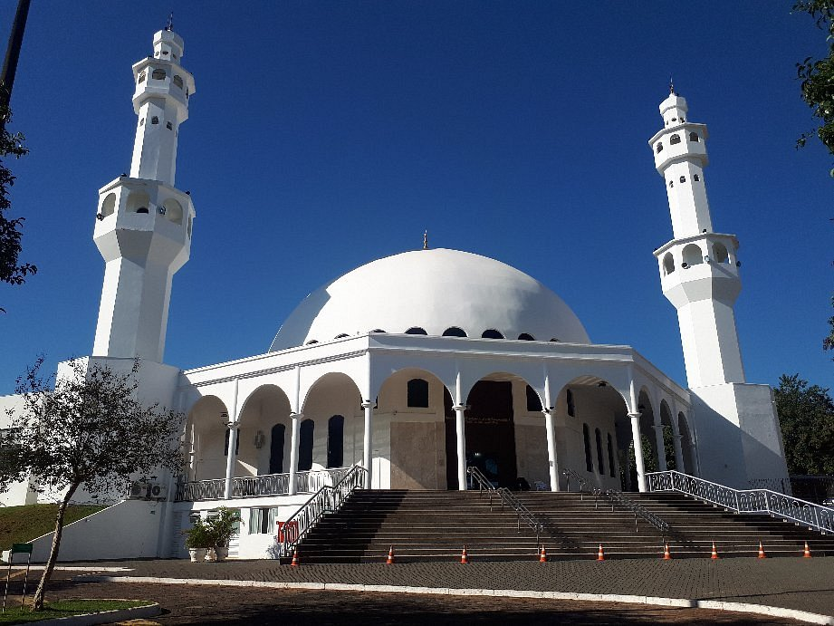

Foz do Iguaçu is one of the most visited destinations in Brazil and offers incredible attractions for visitors of all ages. Due to its natural beauty, the city of Foz do Iguaçu automatically attracts
people from all over the world. It is quite common to see foreign tourists everywhere. The good number of domestic flights there is also an additional incentive for the city to enter the list.
wishes of many Brazilian travelers.
Cozy as it is, Foz do Iguaçu has everything to captivate your heart from the first moments. Nature lovers need to divide their attention between unforgettable landscapes, rare species of
animals and lots of green! In addition to the beautiful Falls, the city also offers radical activities, parks, variety of restaurants, tours, sophisticated hotels and much more! not counting the
possibility of shopping in Paraguay, which can be very worthwhile.
waterfalls of Iguaçu

The Iguazu Falls is one of those attractions capable of leaving anyone breathless. Main attraction of Foz do Iguaçu, it is considered one of the 7 natural wonders of the world and
they live up to the title! Formed on the Iguaçu River, they are right on the border with Argentina and can be enjoyed on two different tours in both countries.
On the Brazilian side, there is a trail that passes through several viewpoints and a panoramic elevator connecting the base of the falls to the upper level of the river. There are also walkways, paths that were
built to take the tourist to several viewpoints, thus appreciating everything closer.
Landmark of the 3 Borders

At the point where they form a common border, Brazil, Argentina and Paraguay established their territorial limits and sealed an integration by building obelisks that became called Marco das Três Fronteiras. Each one has a different shape and is painted in the colors of the respective country.
Bird Park

Parque das Aves is super young: it was created in 1994 with the proposal to offer conditions for environmental preservation and reproduction of animals. It has an area of 17 hectares of native forest, where it is possible to visit the nurseries of rare and colorful tropical birds such as parakeets, macaws, flamingos and toucans. It also has a butterfly house, a hummingbird nursery and the reptiles with snakes and alligators. Currently, the park has approximately 1,500 birds of 140 species, 90% of which are from the Atlantic Forest.
muslim mosque

In Foz do Iguaçu it is possible to learn more about religions that are not very widespread in Brazil. The Sunni Muslim Omar Ibn Al-Khattab Mosque, built from 1981, offers guided tours with a
very interesting programming.
As they are Sunni, there are prayers during the day – and at these times visits are not allowed. As in the Catholic religion, in which the churches have a bell, the mosque has a call,
which is done with the human voice itself. Guided by the Koran, the religion has customs that are different from those Brazilians are used to, such as the fact that men and women pray in spaces
separated.